To be creative is to be curious
Design, BA @ UCLA
Selected Works
Motion Graphics & Visual Effects
“Uproar” by Lil Wayne
Choreography by Usha Jey
Visual Effects made using Adobe After Effects
Quintessentially New-York.
Choreography by Usha Jey
Visual Effects made using Adobe After Effects
Quintessentially New-York.
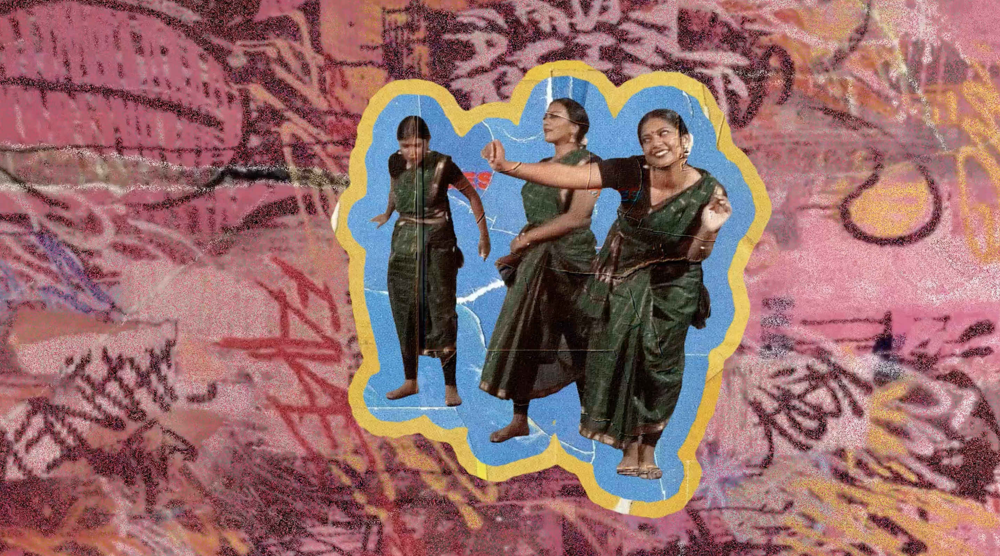
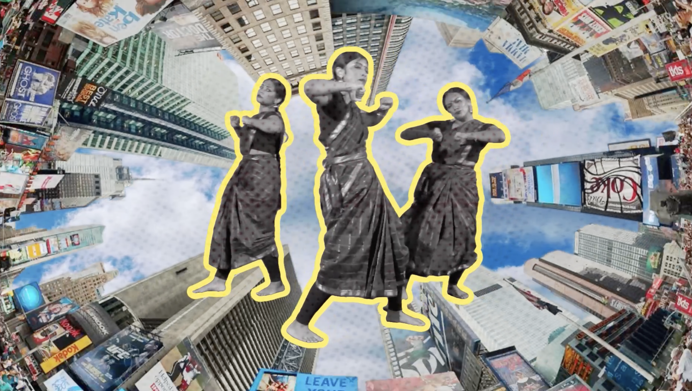
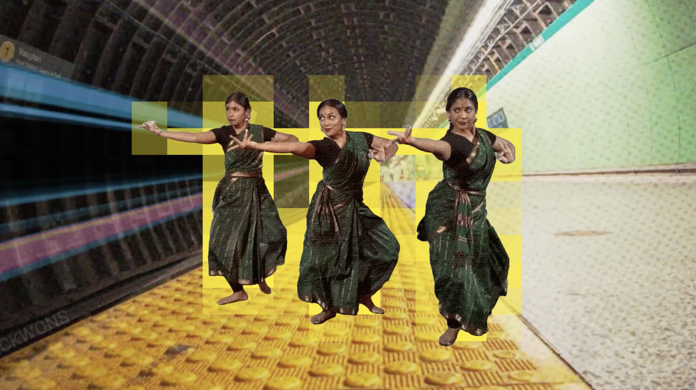
Mixed Material Jali Concepts
Irregular hexagons often used to fit in grid layout (interior lines meet at centroid)
Spatial perception is manipulated through isometric illusions
Tessellation plus isometric illusions creates visually-appealing complexity.
Spatial perception is manipulated through isometric illusions
Tessellation plus isometric illusions creates visually-appealing complexity.
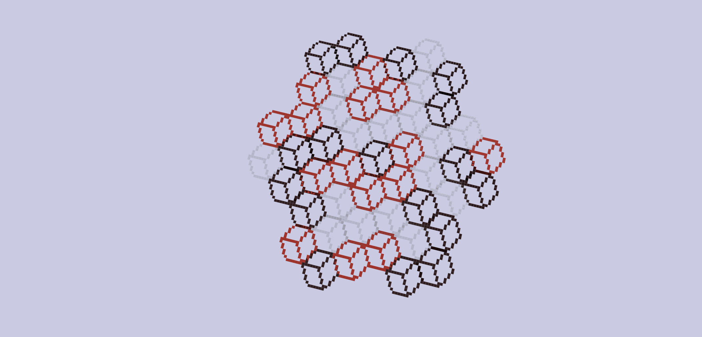
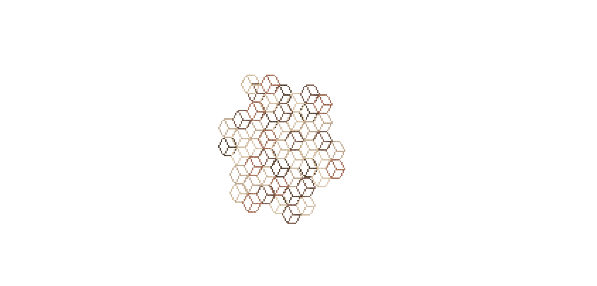
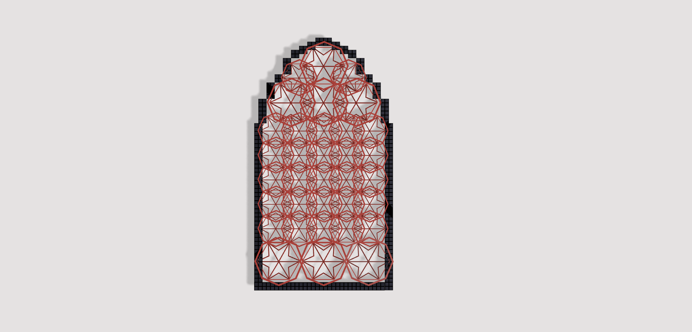
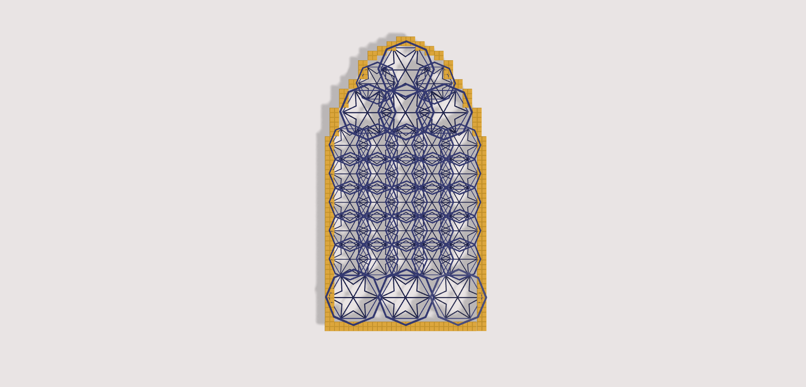
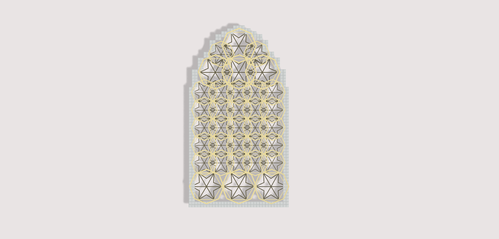
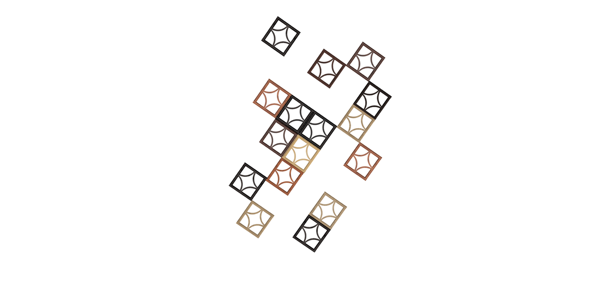
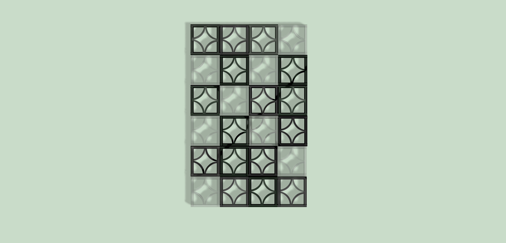
Couture Website Design
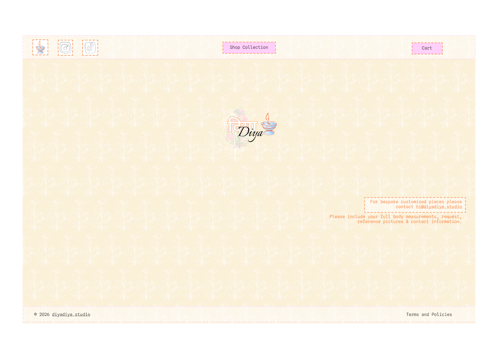
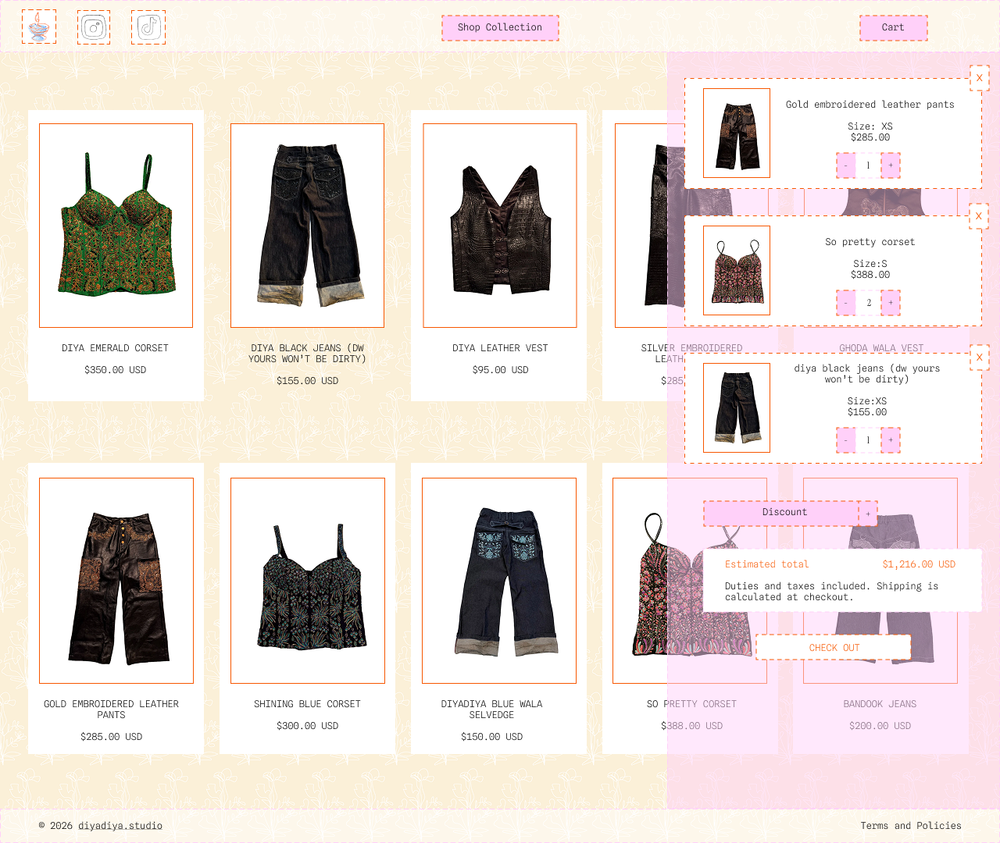
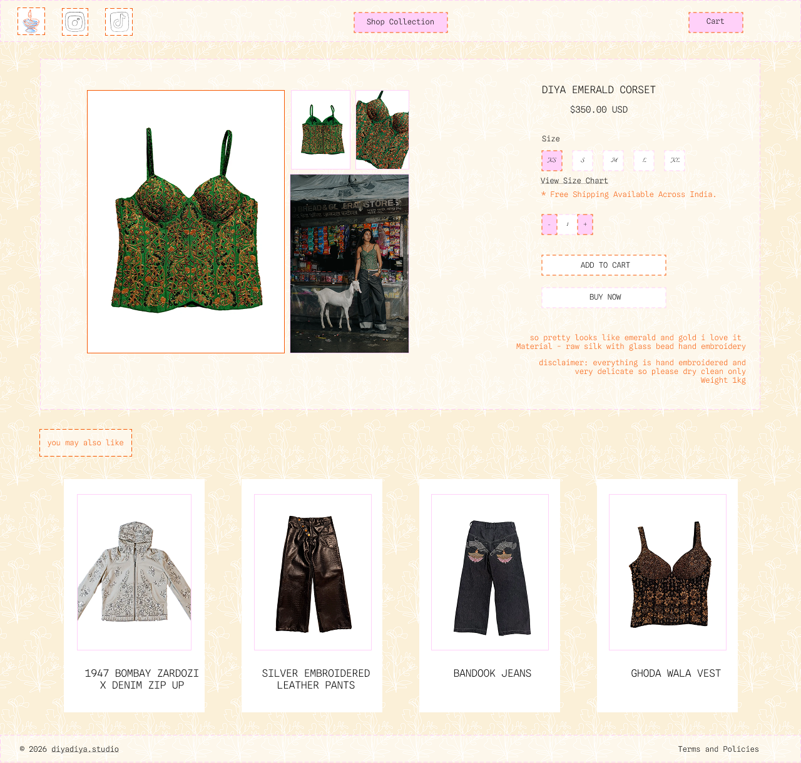
ColorsCanonicalSecondary
Animations4-6 frame hand-drawn GIFs

BackgroundPatterned flower
illustration
illustration
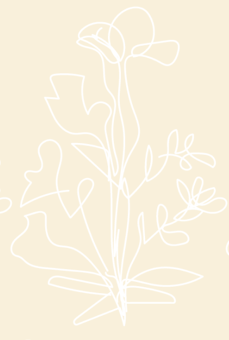
FontsCanonicalSpline Sans Mono
(Light)SecondaryItalianno
(Light)SecondaryItalianno
Illustrations & Mixed Media
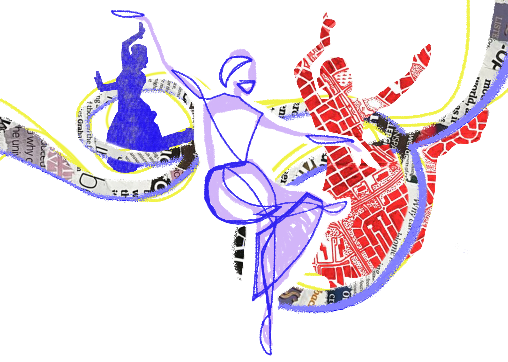
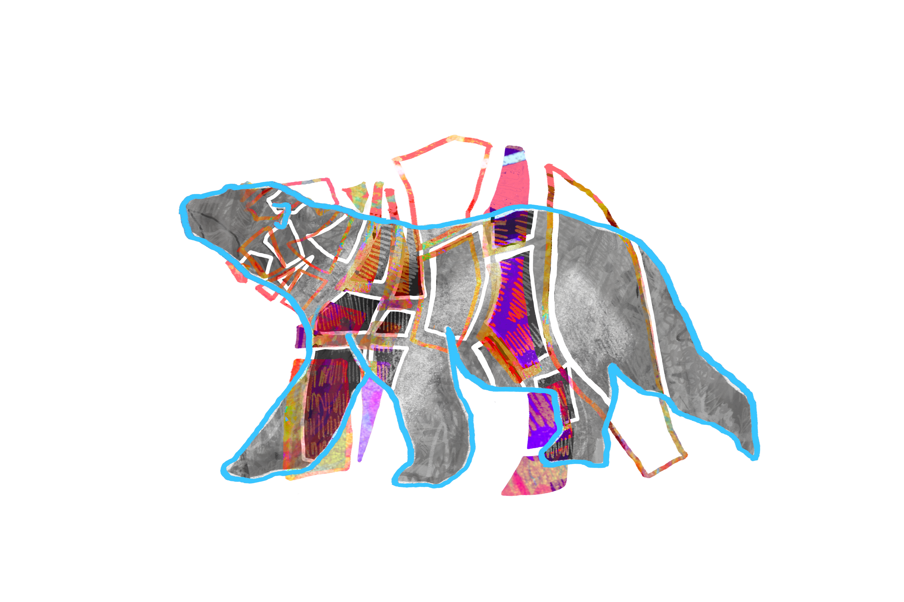